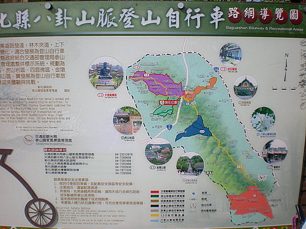

大年初四，頂著攝氏14度的東北季風，獨自一個人造訪素有「中部單車客天堂」之稱的八卦山自行車道，八卦山自行車車道有數條路線，全長約一百餘公里，沿路風景優美，地形起伏不甚劇烈，很適合單車客騎車健身。因為時間有限，我選擇探勘二號路線，亦即虎山岩自行車道。
我在虎山岩將自行車從汽車上卸下來時，車友曾兄熱情的邀請同遊，並熱心的表示願擔任嚮導，兩人在大嶺巷登山口合照留念
彰化139線道的「七礦古墓」，以前這裡是「全台瘋大家樂時期」的著名開牌景點，記得我在高一的時候，也曾來這裡看過開明牌
附上八卦山登山自行車道導覽圖，有空大家可相約同遊